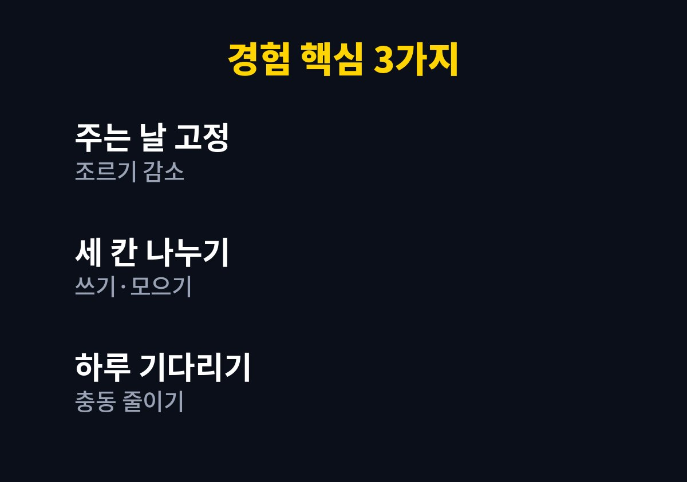
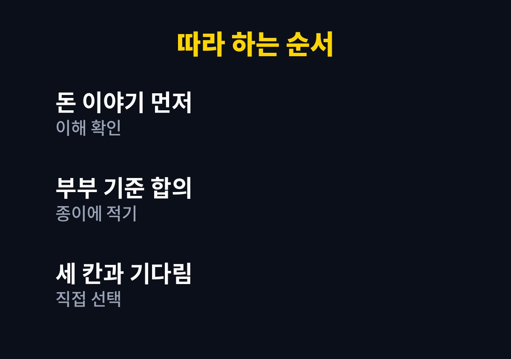

아이 용돈 교육은 금액을 정하는 일보다 아이가 스스로 고르고 아껴 보는 경험을 만들어 주는 일부터 시작하면 된다.
이 글은 사달라는 말을 하루에도 몇 번씩 듣다가 용돈을 줘야 할지 말아야 할지 고민하는 부모를 위해 쓴 글이다.
나는 온라인 쇼핑몰을 운영하며 두 아이를 키우는 아빠다.
물건을 사고파는 일을 매일 하다 보니 아이가 돈을 대하는 태도가 유독 눈에 들어왔다.
그래서 금액 대신 규칙과 대화를 먼저 정한 방법을 순서대로 정리한다.
읽고 나면 우리 집에 맞는 용돈 규칙의 초안을 오늘 안에 써볼 수 있을 것이다.
마트에서 아이가 장난감 앞에 서면 나는 늘 같은 갈등을 겪었다.
사 주면 버릇이 나빠질까 걱정되었고 안 사 주면 아이의 서운한 얼굴이 마음에 걸렸다.
결국 그날 기분에 따라 어떤 날은 사 주고 어떤 날은 사 주지 않는 일이 반복되었다.
기준이 흔들리니 아이는 조르면 사 준다는 것만 배우고 있었다.
내가 매일 하는 일이 돈을 받고 물건을 건네는 일인데 정작 아이에게는 돈 이야기를 해 주지 못했다.
돈은 나쁜 것도 대단한 것도 아니고 선택을 돕는 도구라는 점을 알려 주고 싶었다.
그래서 용돈이라는 틀을 빌려 연습해 보기로 했다.
용돈을 정하기 전에 먼저 아이가 돈을 어떻게 생각하는지 대화로 확인했다.
아이는 카드를 쓰면 물건이 나오는 것으로 알고 있었고 돈이 줄어든다는 개념이 약했다.
이 부분을 모르고 용돈부터 주면 숫자만 오가는 놀이가 될 것 같았다.
아이의 나이에 따라 이해하는 정도가 다르므로 설명의 길이를 아이 수준에 맞춰 조절했다.
부부가 먼저 어떤 때 사 주고 어떤 때 사 주지 않을지를 대화로 맞추었다.
기준이 어른끼리 다르면 아이는 더 쉽게 흔들린다.
정답은 집마다 다르므로 완벽한 기준보다 일관된 기준이 중요하다고 판단했다.
기준을 종이에 적어 두니 그날의 기분에 휘둘리는 일도 줄었다.

금액은 가계 형편에 맞게 부담 없는 선에서 정하고 주는 요일을 고정했다.
필요할 때마다 주지 않고 정해진 날에만 주니 조르는 횟수가 줄었다.
용돈은 심부름의 대가가 아니라 연습용 돈이라고 분명히 말해 주었다.
투명한 통 세 개에 쓰기, 모으기, 나누기라고 이름을 붙여 아이가 직접 나누어 넣게 했다.
눈으로 쌓이는 모습이 보이니 아이가 모으는 일에 재미를 느꼈다.
나누기 통은 작은 선물이나 기부처럼 쓸 곳을 아이와 함께 정했다.
어떻게 나눌지는 내가 정해 주지 않고 아이가 정하도록 기다렸다.
사고 싶은 것이 생기면 하루를 기다린 뒤에도 갖고 싶은지 다시 이야기하기로 했다.
기다리는 동안 마음이 달라지는 경험을 하며 아이는 충동과 필요를 구분해 갔다.
잘못 샀을 때 다시 채워 주지 않는 것은 어려웠지만 가장 큰 배움이 되었다.
마트에서 조르는 일이 줄고 이번 주 용돈으로 살 수 있는지 먼저 따져 보는 모습이 보였다.
아이가 가격을 비교하며 고민하는 모습을 보며 웃음이 나왔다.
나는 대화할 이야깃거리가 하나 늘어서 아이와 가까워진 느낌이 들었다.
용돈을 벌로 빼앗거나 성적과 연결하면 돈이 통제의 수단이 되기 쉬워 피했다.
아이가 돈을 잃어버리거나 낭비해도 크게 나무라지 않고 다음에는 어떻게 할지 함께 이야기했다.
아이의 나이와 기질에 따라 필요한 방식이 다르므로 우리 집 방법을 그대로 따를 필요는 없다.
돈에 대한 지나친 집착이나 불안이 보이면 전문가와 상담해 보는 것이 좋다.

| 단계 | 할 일 | 핵심 |
|---|---|---|
| 대화 | 돈이 무엇인지 이야기하기 | 아이의 이해 확인 |
| 규칙 | 주는 날과 쓰는 기준 정하기 | 부부가 먼저 합의 |
| 연습 | 세 칸으로 나누고 하루 기다리기 | 스스로 고르는 경험 |
아래 다섯 가지는 한 주에 하나씩 천천히 더해 가는 것이 좋았다.
1. 아이가 돈을 어떻게 생각하는지 먼저 대화로 확인한다.
2. 부부가 사 주는 기준을 맞추고 종이에 적어 둔다.
3. 용돈 주는 요일을 정하고 연습용 돈이라고 알려 준다.
4. 쓰기, 모으기, 나누기 세 칸에 아이가 직접 나누어 넣게 한다.
5. 사기 전에 하루 기다리고 잘못 산 경험도 배움으로 이야기한다.
아이 용돈 교육은 돈을 아끼라고 가르치는 일이 아니라 고르는 힘을 길러 주는 일이라고 생각한다.
이번 주에는 용돈 금액을 고민하기보다 아이와 돈 이야기를 한 번 나누는 것부터 해보면 좋겠다.
작은 선택이 쌓이면 아이는 어느새 자기만의 기준을 갖게 될 것이다.
※ 2026년 기준 개인 육아 경험을 바탕으로 정리한 일반 정보이며, 아이의 발달이나 건강에 걱정이 있다면 소아청소년과 등 전문가와 상담하시길 바란다.